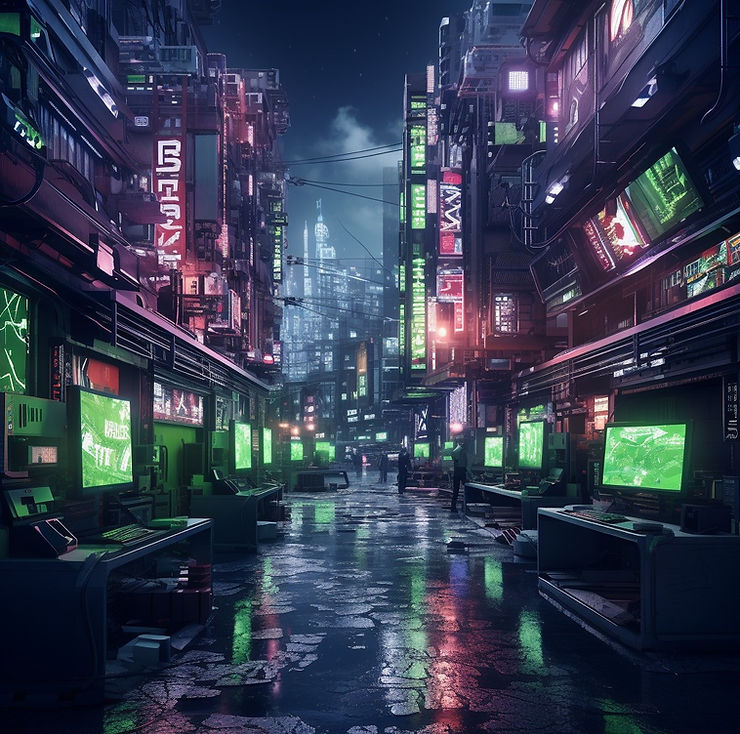

Week 2: Judgement Day - Directed by James Cameron
After a week, we've compiled reference and created a presentation to share with our mentors from Harbor Picture Company.
After finalizing our idea, we selected the reference we wanted to include in our pitch. Chaithanya also create some images using Midjourney to create a concept for our video game world.
Today we pitched our concept to the mentors and we got a lot of great feedback. Here is what we pitched:
Here is the feedback we received:
Shot 1:
We intended to create the bedroom environment with CG. The mentors cautioned us against this due to our production schedule. We are now planning to shoot this in Austin's apartment.
Shot 2:
This shot was flagged as difficult due to the amount of elements required. Pyro, character animation, and a large environment were all of concern.
Shot 3:
In this shot, we planned to have the city retract into microchips on the pcb of the graphics card. A lot of questions were raised regarding how the buildings will animate.
Shot 4:
Most of the comments on this shot were in regards to the starting point and animation of the camera. The mentors suggested that we look at Apple's product announcement videos to collect reference.
{kind=link}